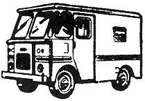

A small step-in van, I believe, is just about the handiest vehicle there is. We've had ours for nearly two years and-in that time-it has probably paid for itself (I'll tell you how to arrange that), been our transportation and home-away-from-home, provided rides for thousands of hitchhikers and given us more fun than three Volkswagens.
The best places I know of to get one of these trucks are (1) the Post Office and (2) bakeries, milk companies and other businesses that keep a fleet of delivery vans. Our pride and joy is a '61 Dodge one-ton mail truck (Dodge makes really good trucks) and, since everyone we pick up wants to know how we got it, here's the details.
The General Services Administration is the U.S. Government agency that actually sells old mail vans. The trucks are sold at a closed bid auction . This means that all bids are submitted in writing by a certain due date . The bids are then opened by the GSA and the highest price offered on each vehicle wins.
Mail truck auctions take place several times a year at different P.O. garages, depending on which ones have a supply of overage vehicles. Your first step, then, is to find out when and where the vans are being sold. Write or call the GSA for this information. The agency's local number and address is in most large city and state capitol phone books under "U.S. Government." Ask to be notified of mail truck auctions in your area and GSA will send you a list of vehicles being sold at each garage that has them. This list will give the year, manufacturer, mileage and condition of each truck and will usually list one-quarter, three-quarter and one-ton vans.
Now take someone who knows about cars and trucks (if you do, so much the better) to a garage that has the kind of van you want. The person in charge there will give you keys to the ones in which you're interested and you can then drive the vehicles around the lot to get an idea of the shape they're in.
Be particularly observant of the transmission in an automatic shift truck. This is one of the worst things to fix yourself and it's expensive to have repaired. I think a standard shift-if you can get one-will present far fewer maintenance problems, be more fun to drive and give you greater control of the van.
When you find a truck that makes you happy, fill out and send in your bid sheet (this should have come with the auction notice) to GSA. Remember that the price of one of these trucks can be really low but also remember that your bid must be the highest for the particular truck you want or you won't get it.
The cheapest truck I know about went for $75. Ours cost $250 and that's about the highest I've heard of . . . but, at that, we outbid a P.O. garage mechanic by only $25. (He had told us the van was one of the best in the lot so don't be afraid to ask the mechanics for tips on bidding and the condition of a truck . . . they may or may not be of help.)
You'll be competing against others who are looking for a good truck and you may find it wise to bid on an otherwisesound vehicle with a bad tire, cracked radiator, broken alternator or other relatively minor but readily apparent fault that will discourage heavy bidding. Then, when you come to pick up the van, you can bring along the replacement part and bolt it on.
You might also consider bidding on two or three vehicles, just to make sure you get one. If you win on all three bids, though, you'll have to buy all three trucks. Of course, many of a van's body (not engine-they're pretty standard) parts are hard to come by and you might want a second vehicle just for spares. If you have a place to keep it, that will be approximately $75-$150 for just about all the parts you'll ever need which is a good deal! Or, you could resell the extra truck formaybe-enough to pay for all the ones you bought.
Suppose now that you've sent in a bid and received notification that you've won. You've mailed or delivered the bid price to GSA and they've given you a certificate of ownership which you must take to the garage when you go to pick up your truck. You'll also need to take along some license plates so you can drive your new toy home.
Many states issue inexpensive temporary plates for just such occasions but you may prefer to halve this particular bit of red tape by purchasing the current yearly license the first time around. When you register your truck, try to license it as a camper (passenger vehicle). This is cheaper than truck registration although insurance might cost less if the rig is wearing truck plates.
At this point I would like to offer some advice: Your truck will probably have logged 50-90 thousand miles of short distance driving when you get it. This means you can expect to have some major and/or minor repair work ahead of you . . . maybe not immediately, but sooner or later. If you're forced to take the vehicle to a repair shop you may end up paying as much as you would have for a late model van from a regular dealer . . . plus, your transportation will always be in the garage and not on the road.
I speak from experience. Three thousand miles after I got my truck I somehow cracked a piston and decided to have the whole engine rebuilt by a "good" mechanic. He did a lot of work for the $500 he charged me but the job took him over a month and he put the rocker arm assembly back together wrong. This warped a valve and caused undue rocker arm and valve stem wear as I later learned when I had to do a valve job in the middle of a trip to western Canada.
There is a solution to this problem, though, and along about the time I was writing the mechanic his check I hit upon it: Learn to fix mail trucks!
For this you'll need about fifty dollars worth of tools and a Motor's repair manual. This is the handbook that regular mechanics use and there are two editions, one for cars and one for trucks.
The truck repair manual can only be purchased by professional mechanics. The car manual, however, is available in bookstores and libraries and-since cars and small trucks are nearly the same mechanically-you can probably use the car manual perfectly well for your van.
There's another way to get a copy of the Motor's repair manual. This handbook is published annually for vehicles of the current year and those of 6-8 years past. For each edition, the publisher adds the latest model and drops the oldest. Thus the manuals overlap considerably and you may be able to get a mechanic to part with one of his superfluous back issues.
Then again, basic engine design doesn't change that much in most cases and you may be able to do as I did: use a new manual for an old truck. Just be sure the handbook is a Motor's repair manual. This is the best repair guide I've seen with loads of diagrams, actual photos of your engine, specifications and instructions on how to do most jobs on each make of car and a whole long section on trouble shooting and figuring out what's wrong in the first place.
A lot of people have converted used vans into perfect luxury vehicles with wood paneling, beds, gas stoves, stereos, etc. That's fine for long trips if you don't like to camp out but it definitely limits the use you can make of your truck. We designed our van for maximum utility by giving it a quick-change interior.
Along one wall I've built a tool box (you always break down when you're going somewhere), a storage chest that fits over the wheel well and a food box. One half of the food box is insulated with fiberglass house insulation and will keep perishables cold for two days on 50 cents worth of ice (it also provides us with icewater). On top of the three chests are two foam rubber couch cushions that make the whole thing into a bed or seat. The important point here is that the complete assembly can be removed in ten minutes. This leaves the interior of the van free for moving furniture.
If you don't mind the work, light hauling is one of the best, most foolproof, part-time jobs there is. Starting such a business is a snap. Simply run an ad in your local paper that says,
Furniture, what have you moved cheaply and quickly.
We also clean out attics, garages and basements.
Then just sit back and wait for the calls to come in . . . And there will be a lot of calls.
You can move the average apartment full of furniture and gear in one to five hours and charge $20-$70. Thirty dollars is about average. Allow yourself and your friend (you'll need help) about $4-$5/hr. each. It's hard work. Add on a little to pay for truck upkeep . . . and you'll have your rates. If there's a refrigerator or range to move, tack on another $3.00 and rent a dolly from U-Haul.
My brother and I have made as much as $800 in three weeks during peak moving season and we were so busy we had to turn people away. You'll meet a lot of good folks this way and it's really enjoyable work that you can arrange to suit your own hours. This is a good deal for your customers too because you're charging only about half of Mayflower's rates . . . if they'd even do the job.
You'll find that cleaning garages and attics can be an especially good part of your business. People throw away all kinds of good stuff and-this way-you get first pick before it goes to the dump.
Hauling electric bands and their gear to and from jobs is another job possibility. You'll usually get into the dance or concert free in addition to getting paid.
You'll find millions of other uses for your truck: Alley picking, hauling building materials, bringing in wholesale produce for food co-ops, picking up every hitchhiker you see and distributing underground papers (another paying job if any are published in your area). You can haul your homegrown vegetables into the nearest city and sell them from the back of the truck, make the van into a lunch wagon . . . or just take everyone you know to the beach.
|
 |
|
|